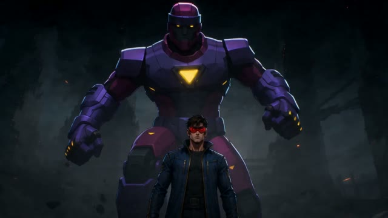
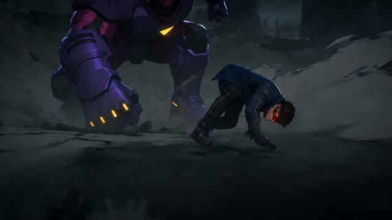
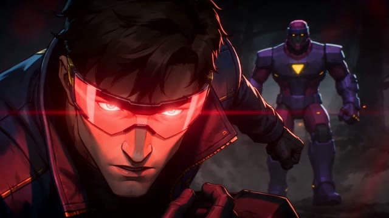
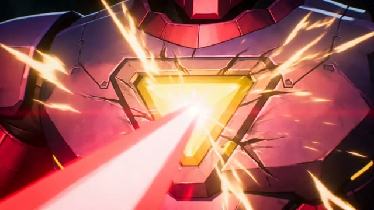
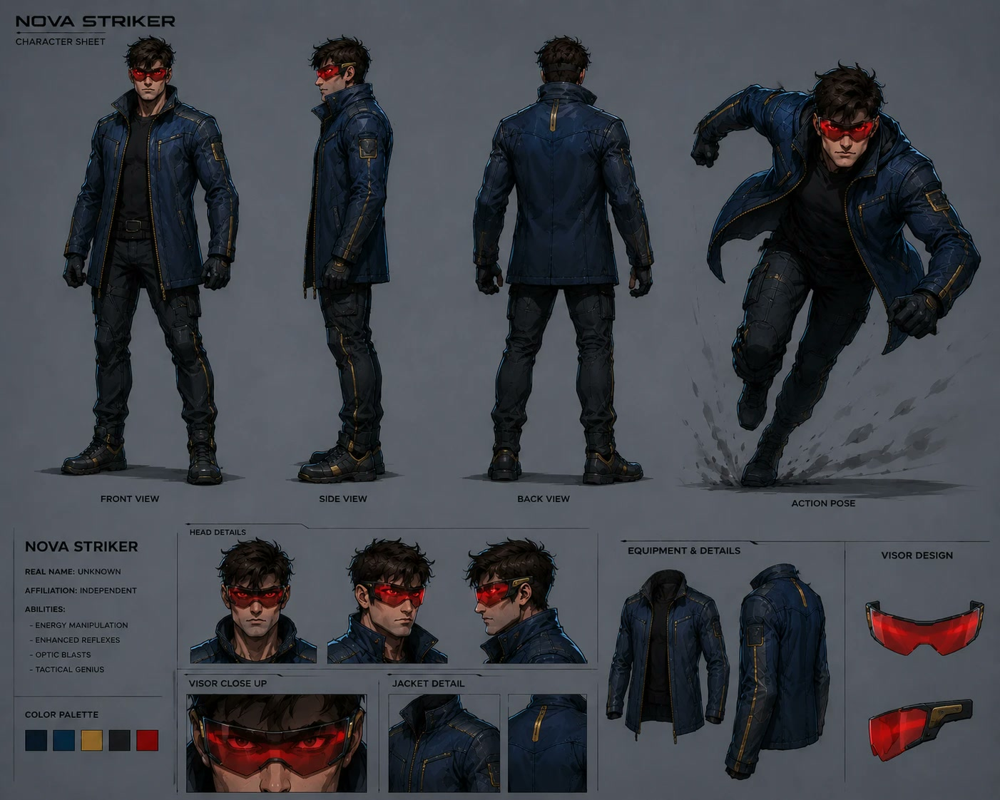
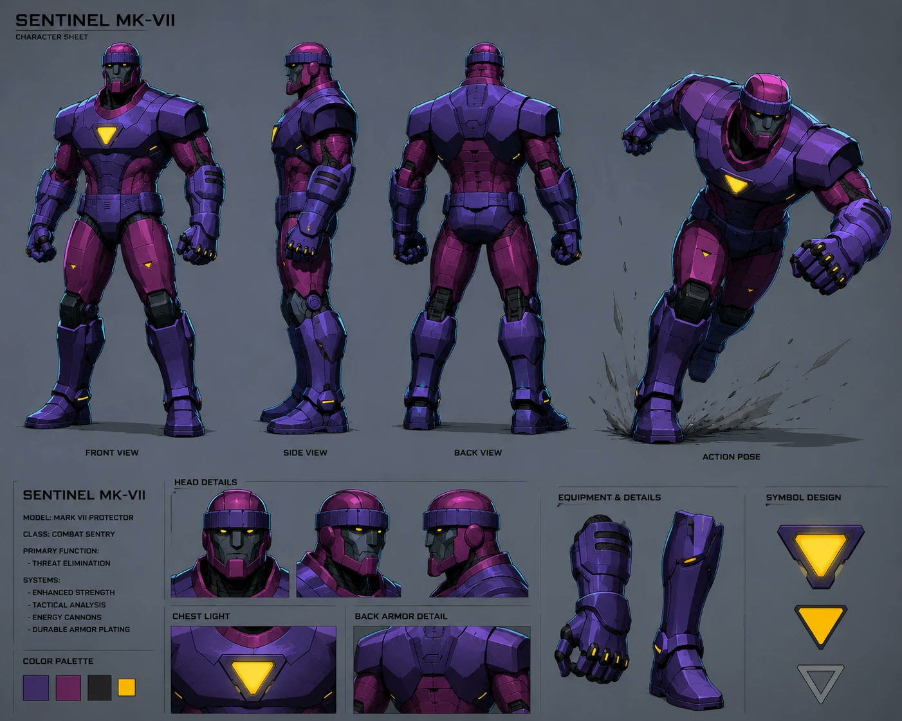

Özgün karakterler · Kısa animasyon
15 sn · 16:9 · 2026
Nova Striker vs Sentinel MK‑VII
İki özgün karakter tasarladım: optik ışın gücüne sahip Nova Striker ve dev koruyucu robot Sentinel MK‑VII. Karakter sayfalarındaki detaylar (kızıl vizör, sarı üçgen göğüs ışığı) doğrudan hikâyenin kırılma anına dönüştü: düşüş, uyanış ve tek bir ışınla gelen son.





